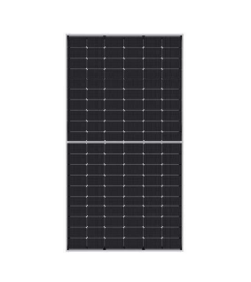
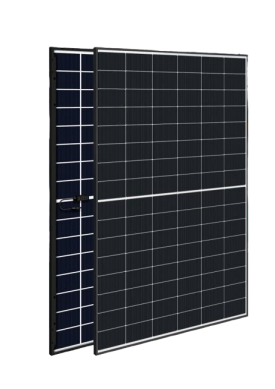

Modelos de placas
Modelo Tiger Neo N-Type
A marca JA Technology Co. Ltda. foi fundada em 2000, e é uma empresa de alta tecnologia especializada em pesquisa, desenvolvimento, fabricação e venda de painéis solares fotovoltaicos, possui uma forte equipe de pesquisa e desenvolvimento e conta com equipamentos de produção avançados. Seus produtos são exportados para diversos países e regiões.
O modelo Tiger Neo N-Type (JKM470N-60HL4-V) é um módulo monocristalino de alta eficiência fabricado pela ginco solar, ideal para sistemas de energia solar residenciais, comerciais e industriais pontos esse modelo apresenta uma potência máxima no ponto de potência máxima de 470W, e auto eficiência era até 21,78%. Tem certificação aprovada pelo INMETRO, oferece 12 anos de garantia de produto e garantia de potência linear por 30 anos.
Modelo (JKM470N-60HL4-V)
Jinko Solar
Modelo EMSC 450M HB
A marca Intelbras tem diversos modelos de equipamento de energia solar, além de fornecer uma opção de energia renovável, elas geram economia na conta de luz, contam com fácil instalação e manutenção. Os equipamentos são de alta resistência e possuem uma vida útil longa. Os materiais e acabamentos são de alta qualidade, resultando em placas solares com alta eficiência e produção energética.
O modelo EMSC 450M HB da Intelbras, é um módulo Fotovoltaico Monocristalino Bifacial N-Type 450W, oferece um excelente custo-benefício na geração de energia solar. Esse modelo em STC (sob condições de teste) apresenta potência nominal de saída (Pmpp/wp) 450W eficiência do módulo em 22,5%. Possui certificação do INMETRO e garantia de desempenho de 30 anos.
Modelo EMSC 450M HB
 IntelBrasComparando as placas
Ambos modelos são parecidos em termos de potência e eficiência, tendo somente pequenas diferenças. Os dois modelos têm certificado INMETRA e a garantia de desempenho de 30 anos. Investir em energia solar é uma maneira de ajudar o planeta e gerar maior economia financeira, e a escolha do modelo vai depender da necessidade de cada residência ou comércio.